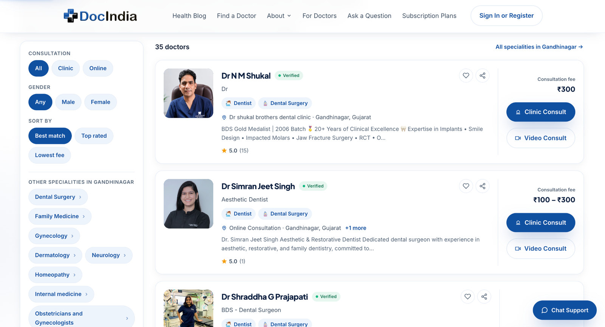

M.Des. · User Experience · Course Assignment · Part B
DocIndia.org — Heuristic Evaluation
A focused evaluation of DocIndia’s two patient-facing routes: finding a doctor and booking an appointment. Ten findings document breakdowns across search, refinement, doctor comparison, consultation-mode selection and symptom-led discovery, supported by interaction videos and a results-filter screenshot.
NameRohit Sai G
Student ID25080038
ProgrammeMaster of Design in User Experience
CoursePragmatic UX Product Critique: Heuristics to Audit Reporting
This review follows the patient journey from doctor discovery through appointment selection and booking feedback, rather than judging isolated screens alone.
The evaluation identified ten usability findings across search input constraints, filter interaction, access to refinements, availability visibility, state restoration, profile information hierarchy, consultation-mode selection and symptom-led matching. After severity calibration, five findings are rated Major and five Workaround. No finding is rated Critical because the observed problems generally allow a user to recover, retry or choose another route, although they may add effort or uncertainty.
Highest task risks
Appointment availability is not surfaced early enough; an explicit online-consultation choice is not preserved into the profile; and patients cannot refine results by language.
Pattern across the journey
Users are asked to infer hidden constraints, repeat selections or inspect multiple profiles for decision-critical information that could be made more explicit.
Evidence and limits
Dynamic behaviours are supported by short recordings. The language-filter finding uses a screenshot of the inspected filter state. The symptom-order finding documents different outputs in one controlled comparison, not medical correctness or universal behaviour.
02 / Scope & Scenarios
One task, two realistic routes
The evaluation is intentionally bounded to the user journey required by the assignment. Other DocIndia areas are excluded unless they directly affect these two flows.
Primary scope
Find a doctor → evaluate fit → check availability → select appointment option → complete/request booking → understand final status.
Out of scope
Doctor-side workflows, provider subscriptions, general content areas and unrelated product journeys are not evaluated here.
Scenario A — I know the speciality
Context: A patient knows the required specialty and locality and needs to compare suitable doctors.
Goal: Find a doctor who meets their practical requirements and has a usable appointment option.
Action: Search by specialty and location → refine results → compare credentials, fee and consultation options → inspect availability → select a slot → confirm the booking state.
Scenario B — I don't know the speciality
Context: A patient has one or more health concerns but is unsure which specialty to search for.
Goal: Understand the suggested route to care, assess suitable doctors and proceed with a booking.
Action: Describe the concern → review the specialty recommendation → compare suggested doctors → inspect consultation options and availability → book.
Scenario C — Time-constrained booking
Context: A patient needs an appointment within a practical time window and wants to avoid spending time on doctors who cannot see them soon.
Goal: Find a suitable doctor with near-term availability and complete the booking with confidence.
Action: Search and refine results → compare doctor fit → identify the next available slot → choose online or in-clinic consultation → submit booking details → verify confirmation.
01
NeedA healthcare need arises.
02
DiscoverSearch or use symptom-led discovery.
03
EvaluateCompare doctor fit, mode, fee and availability.
04
SelectChoose consultation mode/date/slot.
05
BookEnter required details and submit.
06
ConfirmUnderstand whether the request is complete.
03 / Research & Product Understanding
What the product promises, and what the evaluation tests
Secondary research establishes the intended discovery and booking model. The findings below come from observed walkthroughs; product-page claims are treated as positioning, not independently verified outcomes.
Doctor discovery
DocIndia’s homepage presents search by doctor name, specialty and city/locality, alongside online consultation. It also positions profile comparison, ratings and booking as part of the patient journey.
The Find a Doctor page describes entering a health concern, receiving an automatically matched specialty and then browsing doctors. F10 tests the predictability of this route when the same concerns are reordered; it does not assess clinical correctness.
How DocIndia Works describes doctor verification, slot selection and upfront fee information as parts of booking. This informs the evaluation of credentials, availability, consultation mode, fee and confirmation as decision-relevant parts of the task.
The course framework uses a NASA risk-matrix-inspired approach. Probability describes how likely the issue is to occur in the evaluated flow; Impact describes how much it affects the user's ability to complete the task.
Each finding is tied to a specific interaction or visible state. Video evidence is provided as separate files in the adjacent media folder for F01–F08 and F10; F09 uses a results-page screenshot because the issue is the absence of a language filter, not a dynamic interaction.
5 · Critical4 · Major3 · Workaround
Probability \ Impact
Low · 1
Medium · 2
High · 3
Low · 1
1 · Cosmetic
2 · Irritant
3 · Workaround
Medium · 2
2 · Irritant
3 · Workaround
4 · Major
High · 3
3 · Workaround
4 · Major
5 · Critical
05 / Findings
Ten documented findings
The six baseline findings remain intact. F07 documents a consultation-mode reset, F08 documents misleading selector microcopy, F09 documents the missing language filter, and F10 documents an order-sensitive symptom-finder recommendation. Video evidence is linked from the adjacent media folder for F01–F08 and F10; F09 uses the results screenshot.
F01 · Search interaction
The search fields look like free text, but only DocIndia's suggestions are accepted.
A user can type a city/speciality value — including a value already recognised by the operating system — but the search does not proceed unless the user selects DocIndia's own suggestion.
3
Probability
2
Impact
4
Major
Severity
Heuristic
Error Prevention
Observed behaviour
The input visually behaves like a normal text field. When a user types “Hyderabad” or pastes pre-filled address data, the value can look complete, but submission still requires a selection from the platform's suggestion list.
Why it violates the heuristic
The interface lets the user discover the input constraint only at the moment of submission. The valid interaction model should be evident before the user commits to the search.
Severity reasoning4 · Major
Probability 3 + Impact 2 − 1 = 4.
Root cause
The visual affordance suggests open text entry while the underlying search model is suggestion-selection based.
Recommendation
Make the selection requirement explicit before submission, or support free-text values consistently. Disable/annotate the CTA until a valid suggestion is selected.
Interaction evidence
F01 · Search suggestion requirementClick video to play/pause
F02 · Filter interaction
The filter CTA says “Search” even though the user is already on the search-results page.
After selecting or changing filters, the action is still presented as a generic Search CTA. The interface also does not clearly communicate a “changed → ready to apply” state.
3
Probability
1
Impact
3
Workaround
Severity
Heuristic
Match Between System & Real World · Secondary: Visibility of System Status
Observed behaviour
The user is refining an existing results set, but the CTA still says “Search”. The wording does not communicate that filters will be applied to the current result context, and the button's visual state remains continuously prominent.
Why it violates the heuristic
“Apply filters” better matches the user's mental model for modifying an existing result set. The lack of a clear state change also weakens feedback about when a filter change is ready to be applied.
Severity reasoning3 · Workaround
The wording is encountered during refinement (Probability 3), but the button still performs the intended action and users can recover from the ambiguity (Impact 1). 3 + 1 − 1 = 3.
Root cause
The filter component reuses the search action semantics instead of modelling filtering as a separate refinement step.
Recommendation
Rename the CTA to “Apply filters”, visually distinguish its ready state, and only emphasise it after the user changes a filter.
Interaction evidence
F02 · Filter CTA semanticsClick video to play/pause
F03 · Filter layout
The sticky filter panel cannot be scrolled independently.
The left filter rail stays visually persistent while the doctor results scroll, but pointing at the filter area and scrolling still moves the results. Lower shortcut filters remain hidden until the results reach the lower boundary.
2
Probability
2
Impact
3
Workaround
Severity
Heuristic
Flexibility & Efficiency of Use
Observed behaviour
The panel is designed to remain sticky, but its content extends beyond the visible region. The user cannot naturally scroll within the panel to reach lower shortcuts such as specialty and city options.
Why it violates the heuristic
The design creates a persistent control surface without preserving efficient access to all controls contained inside it. For users who want to exploit specialty shortcuts, discovering those options requires an indirect scroll path.
Severity reasoning3 · Workaround
the condition appears when users need lower filters (Probability 2) + can obstruct efficient discovery/refinement (Impact 2) − 1 = 3.
Root cause
The sticky container lacks an independent overflow/scroll model for its own content.
Recommendation
Allow independent panel scrolling or redesign the filter rail so all high-value controls remain reachable without depending on results-page position.
Interaction evidence
F03 · Sticky filter scroll behaviourClick video to play/pause
F04 · Doctor selection
Search results do not show the next available appointment before the user opens a doctor profile.
The user has to open a doctor profile and enter the consultation context to inspect usable dates and times. This can require repeated profile visits when comparing doctors against a time constraint.
3
Probability
2
Impact
4
Major
Severity
Heuristic
Visibility of System Status · Secondary: Flexibility & Efficiency of Use
Observed behaviour
The search result card can still attract the user's attention as a viable option. The search result card does not surface the next available date/time. Users discover the actual slot situation only after opening the doctor flow and selecting the relevant consultation context.
Why it violates the heuristic
Availability is decision-critical information in an appointment task. Hiding it until after profile exploration creates avoidable backtracking and weakens the system's communication of current booking state.
Severity reasoning4 · Major
Availability is important to choosing a viable doctor (Probability 3), but users can return to results and compare another profile (Impact 2). 3 + 2 − 1 = 4.
Root cause
Result cards prioritise doctor discovery/credibility information without surfacing the booking constraint that determines immediate task viability.
Recommendation
Show the next available date/time on the result card where possible. If no slot is available within the relevant search window, state that explicitly and offer an availability refinement such as “Available this week”.
Interaction evidence
F04 · Availability revealed inside profileClick video to play/pause
F05 · Navigation state
Back navigation returns the user to a materially changed search/filter state.
After opening a doctor and returning, the results context does not look/behave like the state the user just left: filter presentation and sorting placement change.
2
Probability
3
Impact
4
Major
Severity
Heuristic
Consistency & Standards · Secondary: User Control & Freedom
Observed behaviour
The initial results view places sorting separately from the left-side filters. After returning from a doctor profile, the visible filter/sort structure is materially different, so the user has to reconstruct where controls live.
Why it violates the heuristic
Back navigation should restore a predictable context. Changing the interaction model after returning weakens continuity and increases the user's need to re-orient.
Severity reasoning4 · Major
the issue appears on a common comparison/backtracking path (Probability 2) + can disrupt task continuity (Impact 3) − 1 = 4.
Root cause
Search-state restoration is not preserving the same component configuration or presentation between entry and return.
Recommendation
Preserve query, filters, sort order and component state when returning to the results page. Treat Back as restoration of context, not a fresh results state.
Interaction evidence
F05 · Back navigation stateClick video to play/pause
F06 · Doctor profile information
The profile shows a language count before revealing the actual languages.
The hero summary communicates a count such as “2 languages”, while the names themselves appear lower in the profile. The information is available, but not at the first comparison point.
2
Probability
2
Impact
3
Workaround
Severity
Heuristic
Recognition Rather Than Recall · Secondary: Aesthetic & Minimalist Design
Observed behaviour
Above the fold, the profile shows a compact summary such as “2 languages”. The user must later scan to “At a glance” to learn the actual languages, while related information is repeated in a separate visual treatment.
Why it violates the heuristic
A patient comparing doctors cannot identify language compatibility from the summary count alone and must scroll to another section to discover the actual values. This increases scanning effort; it does not mean the language information is absent from the profile.
Severity reasoning3 · Workaround
users may not need language details on every visit (Probability 2) + the problem adds cognitive/scanning effort without blocking completion (Impact 2) − 1 = 3.
Root cause
The hero summary prioritises a compact count over the actual language labels needed for comparison, while the detailed values are placed farther down the profile.
Recommendation
Show the actual language labels in the profile summary, or move them beside the count so patients can assess language compatibility without a separate scroll.
Interaction evidence
F06 · Language information fragmentationClick video to play/pause
F07 · Consultation-mode state
The selected online consultation mode is not preserved when opening the doctor profile.
The doctor result card offers a dedicated “Video Consult” action, but the profile opens with “In-clinic” selected. The user must select Video again before choosing a date and time.
2
Probability
3
Impact
4
Major
Severity
Heuristic
Consistency & Standards · Secondary: Flexibility & Efficiency of Use
Observed behaviour
From the doctor results list, the user explicitly chooses “Video Consult”. On the profile page, the booking panel defaults to “In-clinic” instead of carrying the choice forward. The user has to repeat the selection to continue with the intended consultation mode.
Why it violates the heuristic
The action taken on the result card establishes a clear user intention. Resetting that choice during navigation breaks continuity, adds a redundant step and creates a risk that the user may overlook the reset and continue with the wrong consultation mode.
Severity reasoning4 · Major · Provisional
Probability 2 + Impact 3 − 1 = 4. The recorded interaction confirms the behaviour in this flow. The score assumes the impact of selecting the wrong mode is high; check additional profiles before claiming it is universal.
Root cause
The consultation-mode choice made in the result card is not carried into the profile's booking state.
Recommendation
Pass the selected consultation mode into the doctor profile and preselect the same mode in the booking panel. Keep the alternative available so the user can deliberately change it.
Interaction evidence
F07 · Consultation mode not preservedClick video to play/pause
Shows Video Consult being selected from the results card, followed by the profile opening with In-clinic selected and the user switching to Video again.
F08 · Consultation selector microcopy
The label “Change clinic” is misleading when the selector also switches to an online consultation.
On Dr Simran Jeet Singh's profile, the booking panel displays “Change clinic”, but the opened selector contains both an “Online Consultation” option and a physical clinic option. The label does not accurately describe the full set of choices.
2
Probability
2
Impact
3
Workaround
Severity
Heuristic
Match Between System & Real World · Secondary: Consistency & Standards
Observed behaviour
The current booking option is shown as “Online Consultation”, yet the adjacent control is labelled “Change clinic”. Opening the control reveals an online consultation option alongside a named physical clinic. The label suggests that only the clinic location can change, even though the choice also concerns the consultation option/mode.
Why it violates the heuristic
The control's wording does not match what the control actually lets the user choose. At a consequential point in booking, this mismatch can make the user hesitate, overlook the online option or misunderstand whether they are changing location or consultation mode.
Severity reasoning3 · Workaround · Provisional
Probability 2 + Impact 2 − 1 = 3. The wording is misleading, but the opened menu makes the available options clearer. This remains a lower-priority, profile-specific finding rather than a major booking-flow breakdown.
Root cause
The selector uses “clinic” as the label even though its options represent more than clinic-location changes, including an online consultation.
Recommendation
Use a label that reflects the choices available, such as “Change consultation option” or “Change consultation type”. If the control changes both mode and clinic location, the options should also be clearly grouped and labelled.
Interaction evidence
F08 · Misleading “Change clinic” labelClick video to play/pause
Shows the “Change clinic” control opening a selector that includes both Online Consultation and a physical clinic option.
F09 · Search refinement
The doctor-results filters do not let patients narrow results by language.
The inspected results view exposes consultation mode, gender, sort order and specialty shortcuts, but no language-based filter. Patients who need a doctor who speaks a particular language must inspect doctor profiles individually instead of narrowing the results directly.
3
Probability
2
Impact
4
Major
Severity
Heuristic
Flexibility & Efficiency of Use
Observed behaviour
The filter panel provides options for consultation mode and gender, sorting choices such as best match, top rated and lowest fee, and specialty shortcuts. No language filter is exposed in the inspected refinement controls. A patient who needs to communicate in a preferred language has to open profiles one by one and look for language details. The existing F06 finding is separate: it concerns language information being fragmented within a profile, while this finding concerns the inability to filter at the results stage.
Why it violates the heuristic
The system offers only a limited set of refinement paths for a marketplace with varied patient needs. Language may be a practical requirement for understanding symptoms, discussing treatment and feeling comfortable during a consultation. Without a language filter, the user repeats the same profile-inspection task across multiple doctors, increasing effort and making it harder to find an appropriate match efficiently.
Severity reasoning4 · Major
Probability 3 + Impact 2 − 1 = 4. The impact is moderate because users can still inspect profiles manually, but the repeated effort can become substantial when language is a hard selection constraint, especially when searching outside one's home region.
Root cause
The results-refinement model does not expose language as a searchable patient-selection attribute, leaving users to discover it through individual profile inspection.
Recommendation
Add a searchable, multi-select language filter and show the selected language as an active filter. Let users combine language with specialty, consultation mode and location so results can be narrowed to doctors who meet their communication needs.
Visual evidence

F09 · Language filter absent from the inspected results controlsStatic screenshot evidence
Evidence note: this screenshot documents the refinement controls visible in the inspected search state. The absence of a language filter is based on the filter-panel walkthrough; the screenshot is suitable here because the finding concerns a missing control, not a dynamic interaction.
F10 · Symptom-led discovery
The symptom finder changes its recommended specialty when the same symptoms are entered in a different order.
In the recorded comparison, “dry flaky skin, hair fall, weakness” leads to Dermatology, while “weakness, hair fall, dry flaky skin” leads to Internal medicine. The symptom set is the same; only its order changes. This demonstrates order-sensitive output in this test, not that either specialty recommendation is medically incorrect.
2
Probability
2
Impact
3
Workaround
Severity
Heuristic
Consistency & Standards · Secondary: Match Between System & Real World
Observed behaviour
The symptom finder invites users to describe a health concern and offers to match them to a specialist. In two recorded runs with the same three symptoms, changing their order changes the displayed specialty recommendation from Dermatology to Internal medicine. The interface does not explain how it weighs or interprets multiple concerns, or whether their order affects the result.
Why it violates the heuristic
The same symptom set is entered in two different orders, yet the recommended specialty changes and the interface provides no explanation that input order affects the result. This undermines consistency and predictability. It also weakens the match between the patient's real-world concern and the system's response. The finding concerns interaction behaviour, not the medical correctness of either recommendation.
Severity reasoning3 · Workaround
Probability 2 + Impact 2 − 1 = 3. The change is directly demonstrated in this controlled comparison, but its frequency across other symptom combinations is not established. Users can still search for a specialty directly, so the issue creates uncertainty and a workaround rather than proving that the task is blocked.
Root cause
The finder presents a single specialty recommendation without explaining which symptoms drove the match or how multiple concerns are interpreted.
Recommendation
Represent multiple symptoms as separately identifiable inputs, let users indicate a primary concern when relevant, and explain which inputs informed the recommendation. If concerns point to different specialties, communicate that uncertainty instead of presenting an unexplained result.
Interaction evidence
F10 · Same symptoms, different order, different specialty22.8-second comparison · muted
The comparison establishes order-sensitive output for this test. It does not establish that either recommendation is clinically incorrect or that the same behaviour occurs with every symptom combination.
06 / Prioritisation
What should be fixed first?
Severity is used to prioritise by task consequence. After severity calibration, five findings are rated Major and five are rated Workaround; none is labelled Critical. F07 and F08 include scope caveats; F10 records order-sensitive output in the tested comparison without claiming clinical error.
01
Surface availability earlierF04 · booking availability is essential to deciding which doctor to pursue
4 · Major
02
Preserve the selected consultation modeF07 · carry the user's Video Consult choice into the profile
4 · Major · Provisional
03
Enable language-based refinementF09 · reduces repeated profile checks when language is a patient requirement
4 · Major
04
Restore search context on BackF05 · protects continuity when comparing doctors